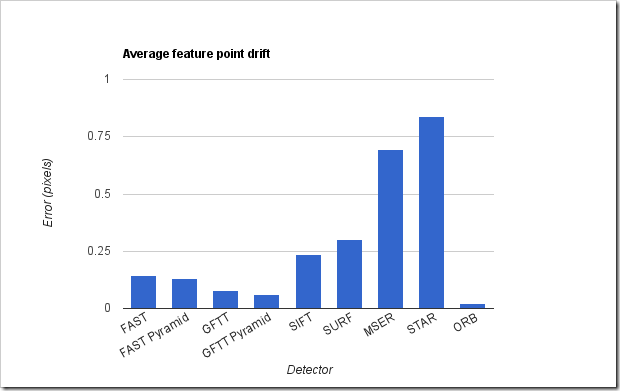
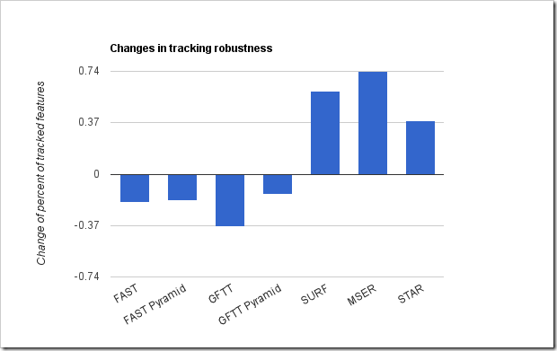

Here is an update of half year-old post about differences between existing feature detection algorithms. Original article can be found here: Comparison of the OpenCV’s feature detection algorithms – I. I decided to update this comparison report since many things happened: OpenCV 2.3.1 has been released and the new type of feature detector (ORB feature detector) has been introduced. ORB is an acronym of Oriented-BRIEF and uses modified to compute orientation FAST detector for detection stage and BRIEF for descriptor extraction. In this article I will test newcomer on the same test cases (the same hardware and input images) using the latest OpenCV build (2.3.1, revision №6016).
Test images


Estimation criteria
Speed per frame – absolute total time in milliseconds spent to the feature detection of the single frame.
Speed per keypoint – detection time for single keypoint. Evaluated as total time divided to number of detected keypoints. Helps us to estimate how cheap the detection actually is.
Percent of tracked features – percent of successfully tracked features from original to transformed image. In ideal situation, value of this mark should be near 100%.
Average tracking error – this is the average distance between position of tracked feature and their calculated position on transformed frame. This mark indicates accuracy of the feature detection. Large values indicates large number of false positive tracking or “drift” of feature point among frames.
Features count deviation – difference between number of keypoints on reference frame and number of detected keypoints on transformed frame divided by number of keypoints on reference frame. Helps estimate how slight exposure changes affects feature detection.
Average detection error – average distance between nearest keypoints on original and transformed frame.
Results
For each image I obtain a five measurements per each detection algorithm. Then I calculate average for each kind of measurement and here are the results: 
Figure 1 – Average number of detected keypoints
As you can see from Figure 1 FAST detector finds a lot of feature points as usual. You can manipulate the numbers of detected points by adjusting detection threshold. Other detectors detects much less feature points but their quality is significantly better. And ORB detector seems to have the fixed maximum number of features detected because if found exactly 702 features on each image.

Figure 2 – Percent of tracked features
Tracking test looks very very strange – the works result show MSER detector which is expectable, since it returns centers of stable extremum regions. But the GoodFeaturesToTrack detector also shows very bad results in comparison with other types of detectors. It’s annoying because I expected this detector to be the best since it’s name is “Good Features To Track”. But here is the facts – the best result of tracking you can achieve with SURF, STAR and new ORB feature detector.
 Figure 3 – Average detection time
Figure 3 – Average detection time
As usual – SIFT and SURF very slow. Other detectors are relatively fast. Feature detection with ORB detector takes ~25 ms for 512x512 image which is good because it calculates feature orientation.

Figure 4 – Average feature point drift
At final we estimate a quality of tracking by measuring distance between actual position of tracked points and expected position that was pre-calculated early. I’m very surprised of results showed by ORB detector – it shows the smallest drift! This will decrease systematic error while tracking a long image sequence. Very nice!
Comparison to previous results
When I got the new results I decided to compare them with previous test results just in case. I knew that guys from Willow garage did some changes in the features2d module. And I was curious what actually they did.
Most of all, I was curious about the performance. As you can see from Figure 5 – there are really some changes happened. SURF detector becomes significantly slower in comparison to 2.2 version, but the GoodFeaturesToTrack becomes work faster.
Figure 5 - Change of detection time
On the Figure 6 you can see the same performance difference test for one feature point. This shows how expensive detection in terms of one feature.

Figure 6 - Change of detection time per one feature point
Sad but true – SURF detector in OpenCV 2.3.1 became even more slower than in 2.2! I can’t figure out what the reason of such performance degradation, because I used the same compiler settings as I used for 2.2 tests. Anyway, the are also a good news – GoodFeaturesToTrack detector becomes a bit faster.

Figure 6 – Feature point drift changes
It seems that something were changed in the detection routines because average pixel drift differs for every type of detector. Can’t figure out what the reason of such results.
Instead of conclusion
I really want to see the automated regression tests for every new OpenCV release done by automated build system. This will provide a great help to developers because they can track how the algorithm change their behavior and why.